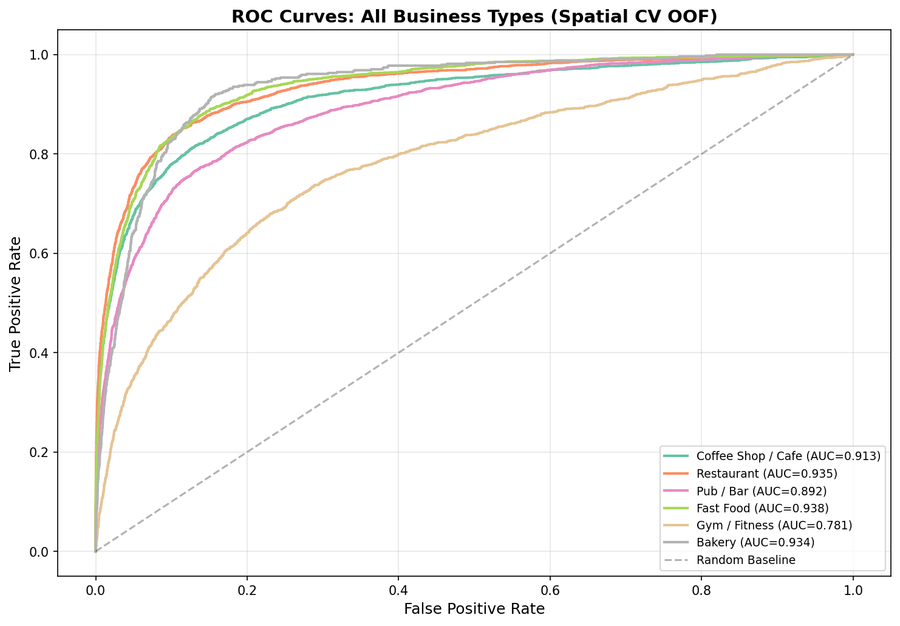
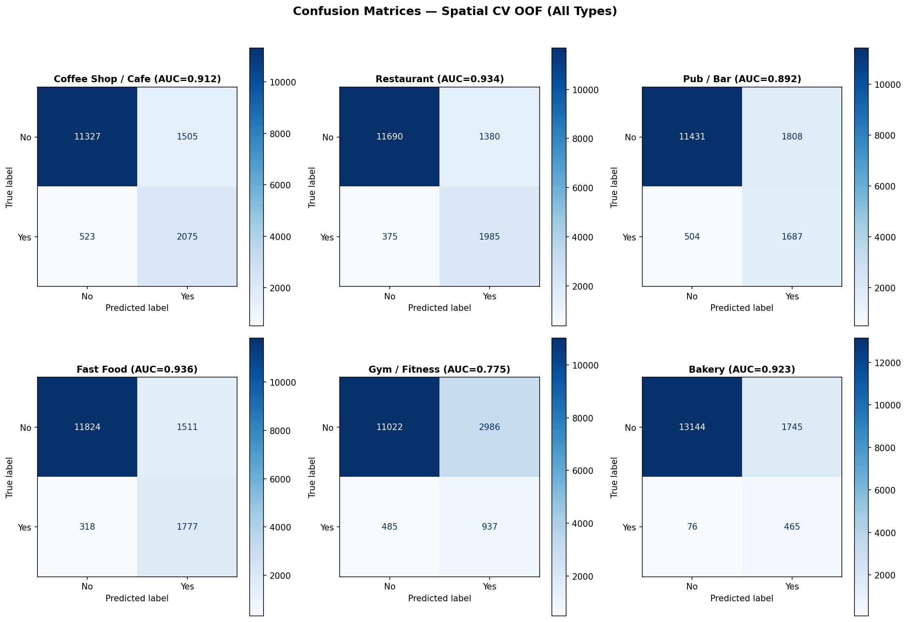
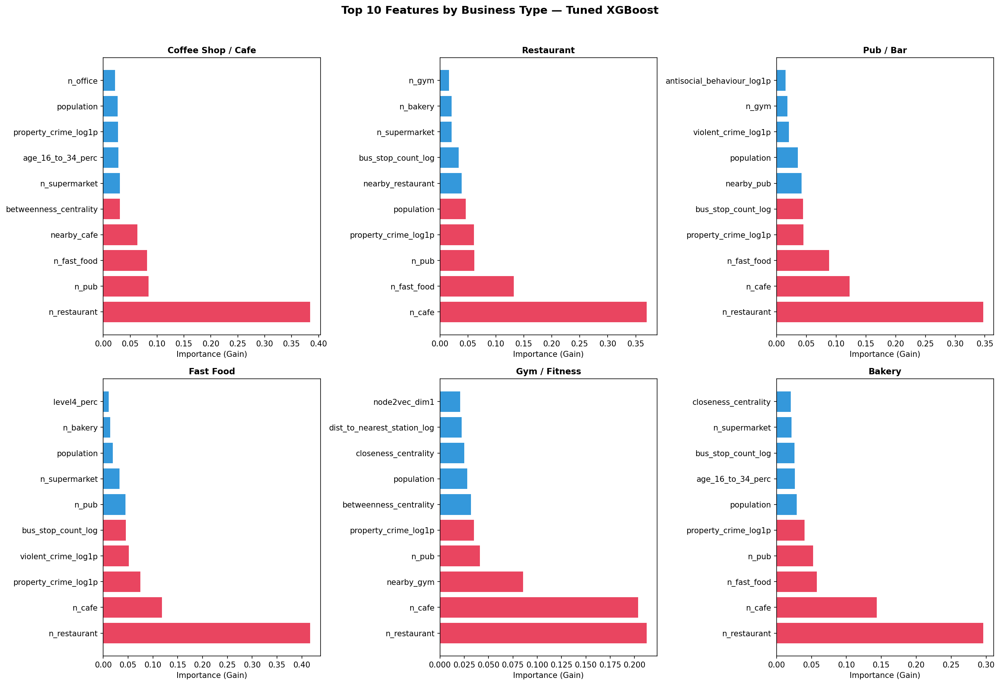

Predictive Site Selection for Specialty Coffee
Binary Classification on H3 Hexagonal Spatial Units — London Borough of Camden
MSc Business Analytics 2026
H3 Hexagonal Grid
Spatial Block CV
XGBoost
Burt's Structural Holes
Project Overview
This project identifies optimal locations for a new specialty coffee shop
in the London Borough of Camden using multi-modal geospatial data and supervised machine learning.
The core insight: a binary classifier's False Positives — locations the model
predicts should have a coffee shop but currently don't — represent untapped market opportunities.
In the language of network theory, these are Burt's Structural Holes (1992):
positions in a spatial network with high demand signals but no existing supply,
now identified by data-driven learning rather than heuristic scoring.
Step 01ETL & Cleaning
→
Step 02H3 Grid & Enrichment
→
Step 03Graph Analytics
→
ML ModelClassification & Tuning
→
OutputSite Recommendations
Research Question
"Can a binary classification model, trained on geospatial features derived from population rasters,
census demographics, and graph centrality metrics, identify underserved locations (structural holes)
for specialty coffee in Camden?"
Key Results
~600
H3 Hexagons
Resolution 9 (~174m edge) covering Camden
12
Engineered Features
Across 4 modalities: footfall, demographics, graph, POI
3
Models Compared
LR vs Random Forest vs XGBoost with Spatial CV
FP
Site Recommendations
False Positives = Structural Holes in the coffee market
Data Sources
| Source | Type | What It Provides |
|---|
| LandScan (ORNL, 2023) | Raster (~1km) | Population density as a footfall proxy |
| ONS Census 2021 (Digimap) | Tabular (OA level) | Demographics: education, age, employment |
| OpenStreetMap (OSMnx) | Vector (Points) | POIs: cafes, gyms, stations, offices |
| H3 Adjacency Graph | Computed (NetworkX) | Centrality: degree, betweenness, closeness, clustering |
Step 01: Data Pipeline (ETL)
The first notebook acquires source datasets from three geospatial modalities and harmonises
them into a common coordinate reference system (EPSG:27700, British National Grid).
Three Data Modalities
| Modality | Representation | Example | Precision |
|---|
| Vector |
Discrete geometric primitives with exact coordinate pairs |
OSM cafe locations (Points), building footprints (Polygons) |
Sub-metre |
| Raster |
Regular grid of cells, each storing a numeric value |
LandScan population grid — each pixel holds a count |
~1 km per pixel |
| Tabular |
Attribute records keyed by a spatial identifier |
ONS Census CSVs — percentages per Output Area |
OA centroid |
POI Categorisation
Each Point of Interest is classified into a business role:
| Role | OSM Tags | Effect on Score |
|---|
| Competitor | cafe, coffee_shop | Reduces site score (direct competition) |
| Synergy | gym, university, office, library | Increases score (complementary foot traffic) |
| Anchor | station (public transport) | Increases score (transit node) |
| Other | bakery, supermarket | Contextual enrichment |
CRS Fix Applied: The original code computed centroids in EPSG:4326 (degrees).
At 51°N, 1° longitude spans ~69 km while 1° latitude spans ~111 km — a 60% distortion.
All geometric operations now use EPSG:27700 (metres) to eliminate this anisotropic error.
Census Merge
Three ONS Census 2021 CSVs (Economic Activity, Age Structure, Qualifications) are merged
on geog_code (Output Area identifier), producing 846 OAs with 7 demographic columns.
Missing values are imputed with the column median (not zero, which would falsely imply "0% employed").
Step 02: H3 Hexagonal Grid & Enrichment
Uber's H3 library partitions Camden into hierarchical hexagonal cells.
Unlike square grids (which have ambiguous adjacency at corners), hexagons have
6 equidistant neighbours — ideal for walking-distance analysis.
Why Resolution 9?
| Resolution | Edge Length | Hex Area | Use Case |
|---|
| 7 | ~1.2 km | ~5.16 km² | District-level |
| 8 | ~460 m | ~0.74 km² | Neighbourhood |
| 9 | ~174 m | ~0.105 km² | Walking-scale (our choice) |
| 10 | ~66 m | ~0.015 km² | Street-level |
At Resolution 9, each hexagon covers roughly the area a person walks in 2 minutes —
the micro-unit of the 15-minute city (Moreno et al., 2021).
Enrichment Pipeline
H3 Grid~600 hexagons
→
Zonal StatsLandScan population
→
Spatial JoinCensus demographics
→
Master Grid9 columns per hex
Census demographics are joined via sjoin_nearest with population-weighted mean
aggregation: larger Output Areas contribute proportionally more to each hex's demographic profile.
Hexes with no OA match receive the borough median (conservative imputation).
Step 03: Graph Analytics & Heuristic Scoring
The enriched H3 grid becomes a spatial graph where hexagons are nodes
and edges connect adjacent hexes, weighted by inverse distance in metres.
Four Centrality Metrics
| Metric | What It Measures | Business Meaning |
|---|
| Degree | Number of neighbours | Interior (6) vs boundary (<6) connectivity |
| Betweenness | Frequency on shortest paths | Transit corridor importance |
| Closeness | Average distance to all nodes | Central vs peripheral location |
| Clustering | Neighbour interconnection | Neighbourhood cohesion |
Weight Semantics: NetworkX treats the weight parameter differently
across algorithms. Path-based metrics (betweenness, closeness) interpret weight as cost to minimise,
so we use actual Euclidean distance. Clustering interprets weight as connection strength,
so we use the IDW value (1/(d+1)).
Heuristic Site Score
ScoreH = PopH × DH + 5 · SH + 3 · AH − 15 · CH
Where DH = Level 4 qualification % / 100 (demand proxy),
S = synergy count, A = anchor count, C = competitor count.
This is an interpretable heuristic — the ML model learns optimal weights from data.
3D Visualisation
Scores are normalised to [0, 1] using min-max scaling, then mapped to a green (high) → red (low)
colour gradient. Extrusion height is proportional to the normalised score.

Fig. 3 — Heuristic site scores across Camden. Green = high opportunity, Red = saturated.
Machine Learning Model
Problem Formulation
Binary classification: predict whether a hexagon should contain a coffee shop
based on its geospatial features. The commercially valuable output is the
False Positives — locations predicted as suitable that have no current supply.
Feature Matrix (12 Features)
| Modality | Features |
|---|
| Footfall | population (LandScan zonal sum) |
| Demographics | employed_total_perc, age_16_to_34_perc, level4_perc, retired_perc, no_qualifications_perc |
| Graph Centrality | degree_centrality, betweenness_centrality, closeness_centrality, clustering_coeff |
| POI Ecosystem | n_synergy, n_anchors (competitors excluded — they encode the target) |
Leakage Guard: The n_competitors column directly encodes the target
(has_coffee_shop) and is excluded from the feature matrix. Synergy and anchor counts
are retained as legitimate upstream predictors.
Spatial Cross-Validation
Standard k-fold CV violates spatial independence (Tobler's First Law). Adjacent hexes
leak similar features into both train and test sets, inflating AUC by 5–15%.
Solution: Group Resolution-9 hexes by their Resolution-5 parent cell (~10 km² blocks).
All hexes sharing a parent are assigned to the same fold, preserving spatial integrity across 5 folds.
Model Comparison
| Model | Type | Imbalance Handling | Rationale |
|---|
| Logistic Regression | Linear | class_weight='balanced' | Interpretable baseline |
| Random Forest | Bagged ensemble | class_weight='balanced' | Non-linear, robust |
| XGBoost | Boosted ensemble | scale_pos_weight | State-of-the-art tabular |
The best model is tuned via GridSearchCV with the spatial CV splitter,
searching over tree depth, learning rate, subsampling, and column sampling.
Run the ML notebook, then copy
data/outputs/roc_curves.png to
docs/assets/'">
Fig. 4 — ROC curves (out-of-fold, spatial CV)
Run the ML notebook, then copy
data/outputs/confusion_matrix.png to
docs/assets/'">
Fig. 5 — Confusion matrix (out-of-fold)
Run the ML notebook, then copy
data/outputs/feature_importance.png to
docs/assets/'">
Fig. 6 — XGBoost feature importance (gain-based)
Results & Recommendations
The False Positive Thesis
Key Insight: False Positive hexagons possess all the learned features of
successful coffee shop locations — high footfall, educated demographics, strong transit
connectivity, synergy with gyms and offices — but no one has opened a shop there yet.
These are Burt's Structural Holes, validated by supervised learning.
Confusion Matrix Interpretation
| Quadrant | Meaning | Business Value |
|---|
| False Positive |
Model says YES, reality is NO |
Site recommendation — highest commercial value |
| True Positive |
Model says YES, reality is YES |
Validates model — correctly identifies existing shops |
| True Negative |
Model says NO, reality is NO |
Correctly rejects unsuitable locations |
| False Negative |
Model says NO, reality is YES |
Niche shops not captured by feature set |
Interactive Recommendation Map
Green extruded hexagons represent recommended sites (False Positives), with height proportional
to model confidence. Hover for details.
Limitations
| Limitation | Impact |
|---|
| Single-borough scope | Results specific to Camden; transferability untested |
| Temporal snapshot | 2021 Census + 2023 LandScan; openings/closings since not captured |
| No revenue ground truth | Target is presence/absence, not profitability |
| No real-time footfall | LandScan is an estimate; no mobile signal data |
| No rental cost data | Commercial viability depends on rent, which is not modelled |
Live Interactive Dashboard
The Streamlit dashboard provides interactive exploration of the ML results,
including filterable maps, demographic comparisons, and feature analysis.
Dashboard Features
Overview Tab
KPI cards, model comparison table, confusion matrix, outcome distribution chart
Interactive Map
Pydeck 3D hex map with filters for outcome type, confidence, and population
Recommendations
Top 20 FP sites ranked by confidence, demographic comparison, radar chart
Feature Analysis
Correlation heatmap, feature importance, distribution explorer by target class
Running Locally
To launch the dashboard on your machine:
pip install -r requirements.txt
streamlit run streamlit_app.py
Prerequisite: Run all 4 notebooks first (01 → 02 → 03 → ML)
to generate the output files in data/outputs/.